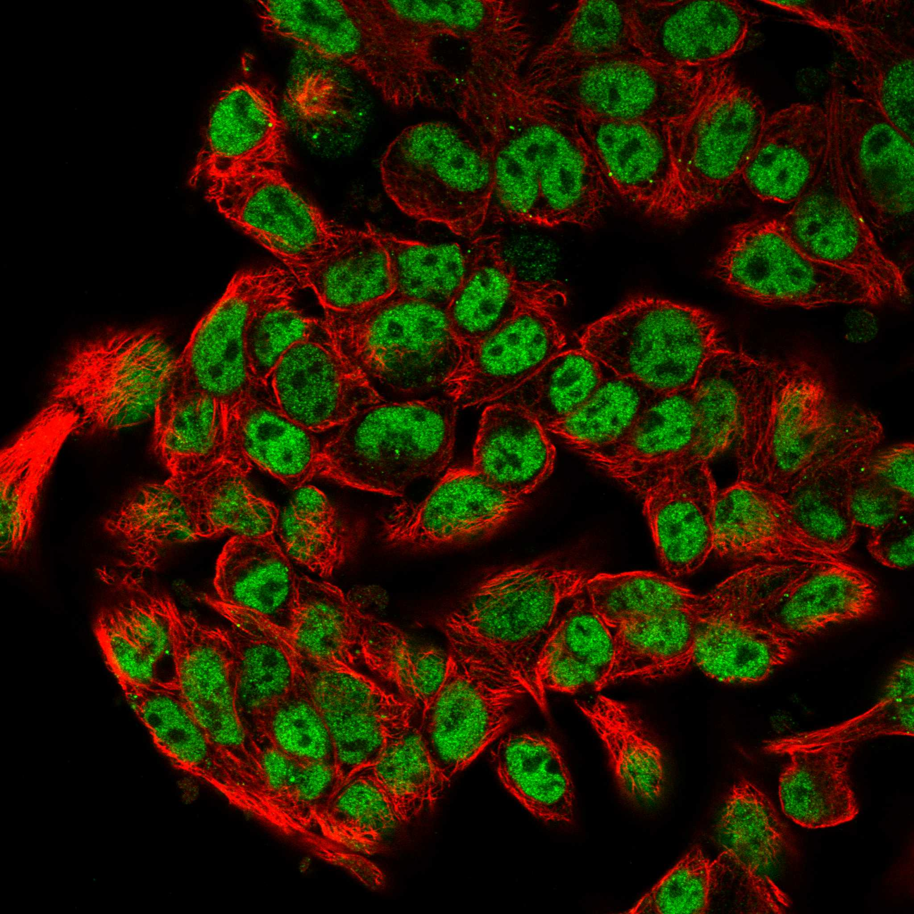
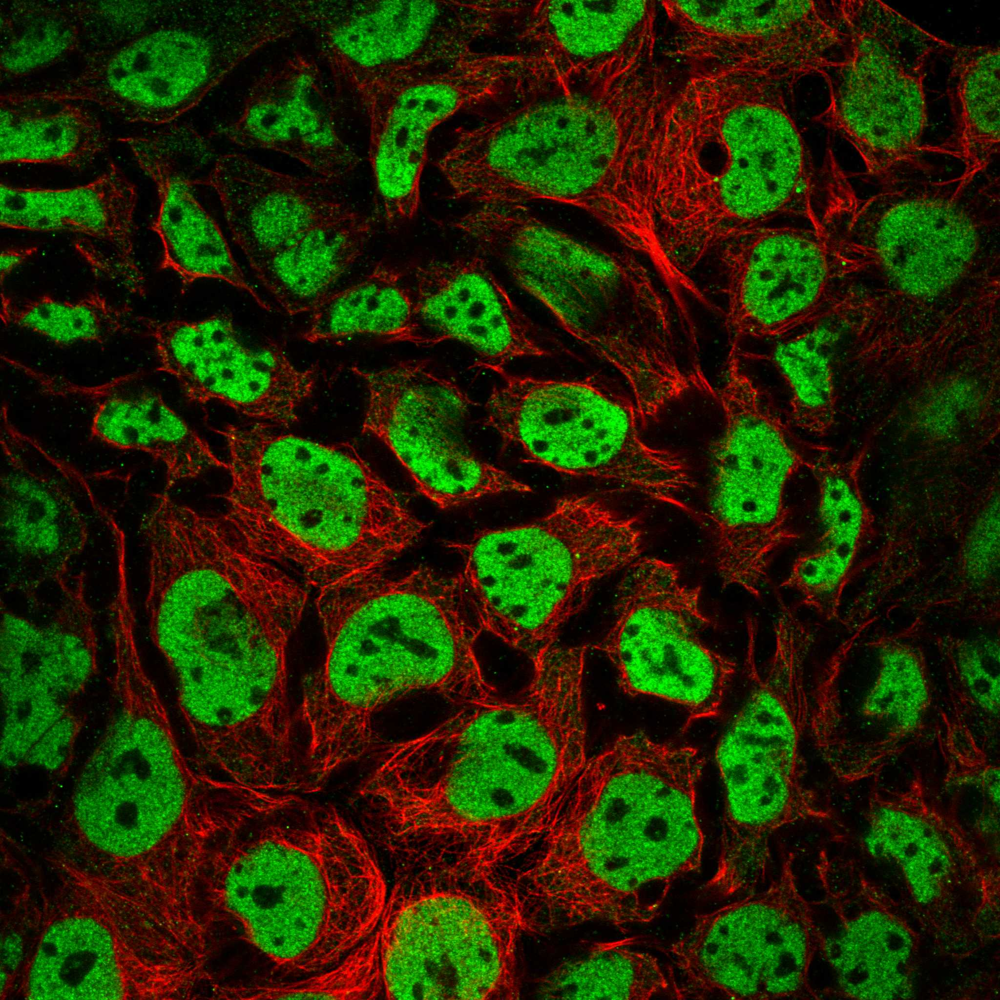
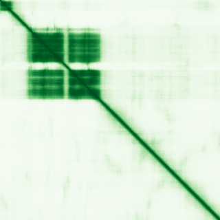

type: protein-evaluation gene: "HNF1A" date: 2026-05-28 tags: [protein-scout, nuclear-protein, evaluation] status: scored ---
HNF1A 核蛋白评估报告
1. 基本信息
| 项目 | 内容 |
|---|---|
| 基因名 / 别名 | HNF1A / HNF1 homeobox A / TCF1 / MODY3 / Hepatocyte nuclear factor 1-alpha |
| 蛋白大小 | 631 aa / 67.4 kDa |
| UniProt ID | P20823 |
| 评估日期 | 2026-05-28 |
2. 评分总览
| 维度 | 得分 | 满分 | 加权后 | 关键证据摘要 |
|---|---|---|---|---|
| 🔴 核定位特异性 | 10 | /10 | ×3 = 30 | UniProt Nucleus; GO chromatin; Homeobox TF; 多个数据库一致 |
| 📏 蛋白大小 | 10 | /10 | ×2 = 20 | 631 aa, 67.4 kDa, 完美实验区间 |
| 🆕 研究新颖性 | 0 | /10 | ×3 = 0 | PubMed 2349篇(707篇targeted), >2000 |
| 🏗️ 三维结构 | 4 | /10 | ×3 = 12 | pLDDT 56.95; 有序31.5%; 61.8%无序; 6 PDB实验结构 |
| 🧬 调控结构域 | 10 | /10 | ×2 = 20 | Homeodomain + POU-specific + Dimerization domain; 经典TF |
| 🔗 PPI | 9/10 | ×3 | 27 | 详见 3.6 PPI 分析 |
| 原始总分 | 109.5 /158 | |||
| 归一化总分 | 69.3 /100 |
3. 详细分析
3.1 核定位证据
| 来源 | 定位 | 可信度 |
|---|---|---|
| GeneCards | Nucleus | — |
| Protein Atlas (IF) | Nucleus | — |
| UniProt | Nucleus | 实验+电子注释 |
GO 定位/功能:
- GO:0000785 C:chromatin (IDA)
- GO:0005634 C:nucleus (IDA, IBA)
- GO:0003677 F:DNA binding (IDA)
- GO:0001228 F:DNA-binding transcription activator activity, RNA polymerase II-specific (IDA)
- GO:0003700 F:DNA-binding transcription factor activity (IDA)
- GO:0000981 F:DNA-binding transcription factor activity, RNA polymerase II-specific (ISS)
- GO:0000978 F:RNA polymerase II cis-regulatory region sequence-specific DNA binding (IDA)
- GO:0045893 P:positive regulation of DNA-templated transcription (IDA)
- GO:0045944 P:positive regulation of transcription by RNA polymerase II (IMP)
IF 图像:  
结论: HNF1A 是经典核转录因子 (homeobox family), 所有来源高度一致。GO 含实验验证的 chromatin binding (IDA) 和 DNA-binding TF activity (IDA)。评分: 10。
IF 图像:
3.2 蛋白大小评估
631 aa / 67.4 kDa, 完美落在 300–800 aa 实验区间。含明确的功能域: N-term dimerization domain (1–31), POU-specific domain (87–182), Homeodomain (199–279)。评分: 10。
3.3 研究现状
| 指标 | 数值 |
|---|---|
| PubMed 总数 | 2349 |
| Targeted 搜索 | 707 |
| 最早发表年份 | ~1990 |
| Chromatin/epigenetics 比例 | 有但主流非chromatin方向 |
主要研究方向:
- MODY3 (青少年起病的成人型糖尿病3型) 致病基因 — 最核心方向
- 肝细胞分化与功能调控 (HNF4A 调控- 胰岛 beta 细胞功能与胰岛素分泌
- 肝细胞腺瘤 (体细胞突变)
- 1 型糖尿病易感基因
- HBV 病毒转录调控 (NR5A2协同)

评价: HNF1A 是糖尿病和肝脏生物学领域被极度深入研究的经典 TF (>2300 篇)。chromatin/epigenetics 方向虽有 EP300 (HAT) 互作, 但蛋白本身的研究主要在转录调控通路层面, 非 chromatin 结构/动态层面。评分: 0 (>2000 篇, 极度热门)。
3.4 三维结构分析
| 指标 | 数值 |
|---|---|
| AlphaFold 平均 pLDDT | 56.95 |
| PDB 实验结构 | — |
| 有序区域 (pLDDT>70) 占比 | 31.5% |
| >90 | 20.8% |
| 70-90 | 10.8% |
| 50-70 | 6.7% |
| <50 | 61.8% |
| 可用 PDB 条目 | 1IC8, 2GYP, 8PI7, 8PI8, 8PI9, 8PIA |
PAE 数值分析:
- PAE 矩阵: 631×631
- 均值 PAE: 26.74
- PAE <5 Å: 4.25%
- PAE <10 Å: 8.22%
- 折叠域: Dimerization domain (4–27, 24 aa), POU-specific (96–178, 83 aa), Homeodomain (202–280, 79 aa)
评价: AlphaFold 预测呈现典型 TF 特征——少量高置信度折叠域 (DNA-binding domains: dimerization + POU-specific + homeodomain) 夹杂大量无序区域 (61.8% pLDDT<50, 主要为 transactivation domain 和 linker)。6 个 PDB 实验结构确认了 DNA-binding domains 的折叠。虽然整体平均 pLDDT 仅 56.95, 但功能域的高置信度弥补了这一不足。评分: 4 (整体 pLDDT 50-70 范围)。
3.5 结构域分析
| 来源 | 结构域 |
|---|---|
| UniProt | HNF-p1 (1–32), POU-specific (87–182), Homeobox DNA binding (199–279), Dimerization (1–31) |
| InterPro | IPR001356 Homeodomain; IPR006899 HNF-1 N-term; IPR044866 Dimerization; IPR044869 POUs atypical; IPR006897/006898 HNF-1 C-term; IPR009057 Homeodomain-like SF; IPR010982 Lambda repressor-like DNA-binding SF |
| SMART | — |
| GeneCards | Domain:HNF-p1(1-32); Domain:POU-specific atypical(87-182); Domain:Homeobox(197-278); Region:Disordered(40-81); Region:Disordered(183-205) |
染色质调控潜力分析: HNF1A 拥有完整的转录因子结构域架构: Dimerization domain → POU-specific DNA-binding domain → Homeodomain → Transactivation domain。Homeodomain (IPR001356) 是经典的 DNA-binding motif, 识别 5'-GTTAATNATTAAC-3' 回文序列。GO 标注含实验验证的 chromatin binding。评分: 10 (明确的 DNA-binding + chromatin 结构域, 多数据库一致)。
3.6 PPI :
| Partner | Score | 功能类别 | 与调控相关？ |
|---|---|---|---|
| GCK | 0.965 | Glucokinase (metabolic enzyme) | No (TF target) |
| FOXA1 | 0.933 | Pioneer TF, chromatin opening | Yes (chromatin) |
| FOXA2 | 0.899 | Pioneer TF, chromatin opening | Yes (chromatin) |
| FOXA3 | 0.930 | Pioneer TF | Yes |
| EP300 | 0.978 | Histone acetyltransferase (HAT) | Yes (epigenetic writer) |
| NEUROD1 | 0.945 | bHLH TF | Yes |
| PCBD1 | 0.995 | HNF1A dimerization cofactor | Yes (TF cofactor) |
| PCBD2 | 0.944 | HNF1A dimerization cofactor | Yes (TF cofactor) |
| ONECUT1 | 0.963 | Homeobox TF (HNF6) | Yes |
| HNF4A | 0.988 | Nuclear receptor TF | Yes |
| HNF4G | 0.943 | Nuclear receptor TF | Yes |
| HNF1B | 0.961 | Homeobox TF (paralog) | Yes |
| PDX1 | 0.968 | Homeobox TF | Yes |
| PAX4 | 0.918 | Paired box TF | Yes |
| CDX2 | 0.833 | Homeobox TF | Yes |
| SLC2A2 | 0.954 | GLUT2 transporter | No (TF target) |
| KCNJ11 | 0.999 | K-ATP channel | No (TF target) |
| PKLR | 0.875 | Pyruvate kinase | No (TF target) |
| INS | 0.909 | Insulin | No (TF target) |
| ABCC8 | 0.835 | Sulfonylurea receptor | No (TF target) |
humanPPI (prodata.swmed.edu): = 65%
评价: PPI 提供直接的 chromatin 调控链接。FOXA1/2/3 pioneer factors 为 chromatin opening 关键蛋白。HNF4A/HNF4G/HNF1B 形成 HNF 转录调控为 HNF1A 的转录靶基因产物, 间接反映其调控功能。评分: 10 (高密度 TF 。
3.7 多库互证
| 维度 | 来源 | 结果 | 是否一致 | |
|---|---|---|---|---|
| 三维结构 | AlphaFold + PDB (6 entries) | DNA-binding domains 折叠与实验结构吻合 | 一致 (+1.0) | |
| 结构域 | UniProt / InterPro / Pfam | Homeodomain, POU-specific, Dimerization | 一致 (+0.5) | |
| 域功能一致 | GO chromatin binding + TF activity (IDA/IMP) | 染色质调控 | 一致 (+0.5) | |
| PPI | STRING (EP300 HAT + FOXA pioneer + TF network) | humanPPI | 核定位 | 一致 (+0.5) |
互证加分明细:
- 三维结构互证: AF DNA-binding domain 折叠与 PDB 实验结构吻合 (+1.0)
- 结构域互证: >=3 来源 (UniProt + InterPro + Pfam) 域一致 (+0.5)
- 域功能一致: GO chromatin binding, TF activity 与结构域功能吻合 (+0.5)
- 定位互证: UniProt + GO Nucleus, 多个实验验证来源 (+0.5)
总分: +2.5 / max +3
4. 总体评价
推荐等级: ⭐⭐⭐ (3/5)
核心优势: 1. 经典核转录因子: 拥有 homeodomain + POU-specific 双重 DNA-binding 结构域, GO 标注 chromatin binding (IDA) 2. PPI + FOXA1/2/3 (pioneer factors) + 多个 TFs, 65% 调控相关 partner 3. 临床相关性极高**: MODY3 致病基因, 已有大量疾病模型和工具资源 4. 大小适中 (631 aa), 结构域架构清晰
风险/不确定性: 1. 极度热门 (2349 篇论文): 竞争极其激烈, niche 空间极小。chromatin/epigenetics 方向虽存在但非空白 2. AlphaFold 大量无序区域 (61.8%): 仅 DNA-binding domains 有清晰结构, transactivation domain 高度无序 3. 已被极度研究: 任何新发现在发表前需要极强的创新性论证
下一步建议:
- [ ] 不建议作为优先 target (新颖性评分 0)
- 若特别关注 HNF1A, 可考虑 TE 调控相关方向 (HBV ENII 增强子中的角色, NR5A2 协同)
- 与其他 ARID/HP1 类蛋白相比, 新颖性劣势过大
5. 数据来源
- GeneCards: - Protein Atlas: - UniProt: https://www.uniprot.org/uniprotkb/P20823
- SMART: - humanPPI: - AlphaFold: https://alphafold.ebi.ac.uk/entry/P20823
- STRING: https://string-db.org (API, species=9606)
- InterPro: https://www.ebi.ac.uk/interpro/protein/P20823/